4DK NO. 1 TEAM
SAN ANTONIO SPURS
The Spurs remain at the top of our editorial rankings, with the Lakers right behind them.
12–2 · #1Thirty teams. Original 4DK analysis. Our MVP and rookie races. The same magazine presentation as our November 10 edition.
The Spurs remain at the top of our editorial rankings, with the Lakers right behind them.
12–2 · #1Boston climbs to third, Philadelphia sits fourth, and Houston rounds out our top five.
Minnesota without Ant. Memphis with Cam Boozer. Miami's resurgence. Oklahoma City's injury burden.
Eight final games inform our November 17 editorial analysis. Results and records were cross-checked against the November 16 game log and standings snapshot. The 4DK Power 30 order remains our independent editorial judgment.
Statistical cutoff: games completed November 16. Individual season averages, last-five game logs and injury designations are not represented as verified until each is checked separately.
Records reflect our approved November 17 working board. Previous rank compares with the November 10 published edition. Team photos and original scouting notes return in the familiar 4DK layout. Historical stat lines have been removed rather than presented as current.
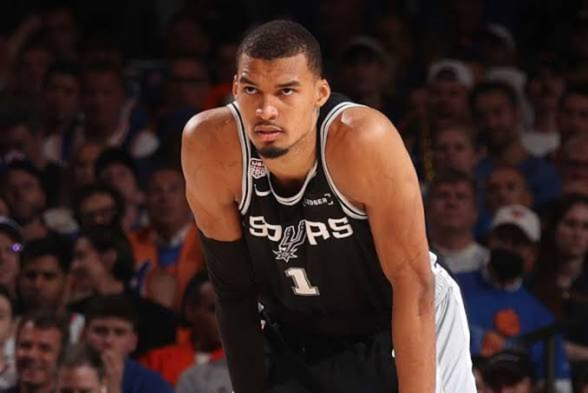
The 12–2 record and a twelve-game winning streak make this the league's most convincing early-season two-way statement. Wembanyama's rim deterrence changes opposing shot selection, but the guards' ability to create against pressure determines whether that defensive advantage survives a seven-game series.
THE 4DK DEEP DIVE: San Antonio is not merely winning because Wembanyama is a matchup nightmare. His length lets perimeter defenders apply pressure knowing the back line can erase mistakes, and his offensive range forces opposing bigs into decisions they rarely face. Fox gives the Spurs a downhill organizer who can attack before a defense gets set; Harper and Castle offer different ways to pressure the paint and move the ball after the first rotation. The test is not whether this group can dominate an ordinary November game. It is whether the Spurs can manufacture efficient shots when a playoff defense takes away the initial action, limits transition, and dares the supporting cast to make quick decisions. At No. 1, our standard is championship-level adaptability, not just the best early record.
The Spurs can dictate games with Wembanyama's rim protection, but their next challenge is offensive versatility. When opponents load up on the paint, Fox must win the first advantage and Harper and Castle must convert it into clean looks. A 5–0 stretch is a statement; sustaining half-court execution is what can keep San Antonio at No. 1.
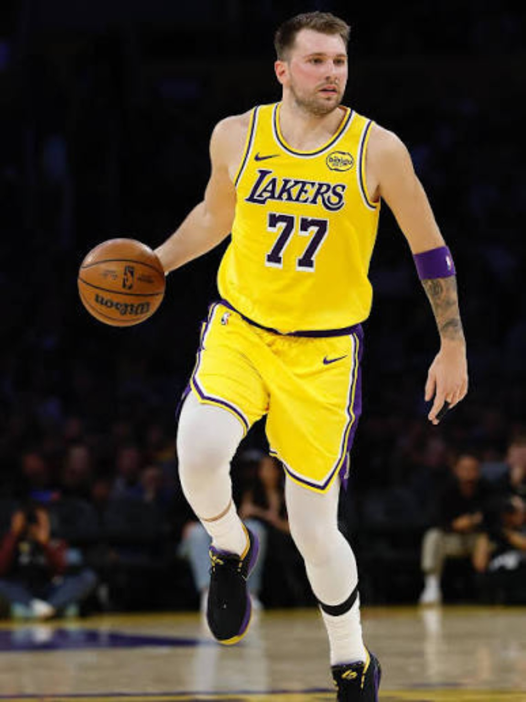
Luka's scoring is the headline, but the Lakers' 12–2 start is about offensive orchestration. They must show that the half-court offense can stay unpredictable against switching defenses and that defensive effort travels on the road.
THE 4DK DEEP DIVE: Luka's ability to dictate the pace is the engine, but the Lakers' ceiling depends on the possessions after he draws two defenders. Reaves has to punish closeouts without holding the ball, and Kessler's screening and interior defense must create value even when he is not finishing a play. A 12–2 start gives Los Angeles the right to talk like a contender; it does not eliminate the question of how this group handles opponents who switch everything, load the nail, and make Luka work on defense. The most encouraging version of the Lakers is not simply Luka scoring forty. It is a balanced offense that gets stops, rebounds, and early offense before opponents can build their preferred matchups.
Luka's scoring and passing can bend any defense, but a 12–2 start also puts a spotlight on the possessions when he gives up the ball. Reaves must turn those openings into quick decisions, and Kessler's screening and rim protection have to travel against bigger frontcourts. The Lakers are winning; their playoff-style defensive discipline is the next test.

The 115–105 loss to Orlando ended a six-game streak and offers a useful test rather than a reason to panic. Boston's ability to recover its defensive discipline and manage difficult wing matchups will tell us more than the result alone.
THE 4DK DEEP DIVE: Boston belongs at No. 3 because its case is bigger than a single winning streak. Tatum and George give the Celtics size and creation across the wings, while Pritchard can change the tempo with quick decisions and deep shooting range. The Orlando loss matters because it highlights the challenge: teams with length can disrupt Boston's first action and force the Celtics to find offense without relying on a star bailout. Our evaluation also has to account for defensive discipline, bench minutes, and whether the ball continues to move when the first option is denied. We have discussed Boston as a possible top-three seed, and this is why: the talent and tactical options are there. What remains to be proven is that the group can sustain that standard through injuries, matchup changes, and a full playoff-style series.
Tatum and George give Boston multiple ways to manufacture a good shot against switching defenses. The question is whether Pritchard and the supporting rotation can maintain ball movement and perimeter pressure when those stars sit. If the Celtics defend without fouling and win the non-star minutes, their top-five case strengthens.

Philadelphia's 135–123 win over Brooklyn, with Embiid and Jaylen Brown leading the way, reinforces the ceiling of its scoring options. The challenge is getting consistent stops when the offense slows and keeping the stars' workloads sustainable.
Philadelphia's best possessions begin with forcing the defense to choose which threat to load up on. Embiid's gravity can create driving gaps for Maxey and Brown, but a good playoff defense will test the timing of their cuts and the willingness of the weak side to shoot. We want to see the Sixers generate stops without surrendering second chances and keep their late-game offense from becoming a sequence of difficult isolations.
Maxey gives Philadelphia pace, while James and Brown can punish switches with size and shot creation. The next leap is defensive continuity: the Sixers must get back in transition, protect the weak side and manage Embiid's workload without surrendering the paint. The talent says title contender; the collective stops must prove it.

Miami's 128–110 win exposed Houston's vulnerability when its preferred physicality does not control the tempo. Sengün can punish mismatches, but Houston needs perimeter resistance and faster counters to opponents' runs.
Houston's physicality is a weapon, but it becomes a limitation when the Rockets cannot convert a stop into organized offense. Şengün is at his best when he reads cutters and handoffs before a double-team arrives. Against Miami, the defensive balance and perimeter recovery were the more revealing questions. The next step is winning games where opponents deny the first post entry and force the guards to make quick choices.
Şengün's passing from the elbows and Durant's isolation scoring are complementary weapons, but the Rockets are most dangerous when Amen's cutting and transition pressure connect them. Houston must avoid possessions that stall into a single difficult jumper. Sharper defensive rebounding and better late-game spacing can reverse this week's slide.
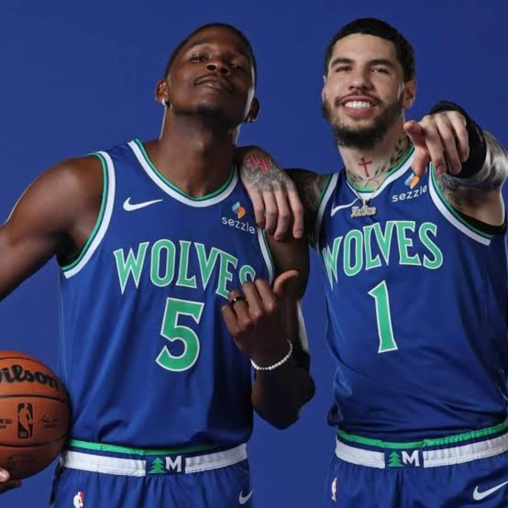
Minnesota beat Portland 106–98 with Terrence Shannon Jr. scoring 34. Winning without Edwards speaks to collective defensive habits and roster depth; the bigger question is how Ant's eventual return enhances rather than interrupts this rhythm.
The Wolves have turned Edwards' absence into a test of collective responsibility. Their offense cannot simply replace his attempts one for one; it needs early cuts, screening and purposeful attacks before the clock runs down. On defense, communication and defensive rebounding are what allow the supporting cast to survive a difficult shot-making night. When Ant returns, the ideal version combines his advantage creation with the movement habits developed without him.
With Edwards unavailable, Minnesota's offense has to be more intentional. LaMelo can create early advantages, but the Wolves need cutters to move on time and Gobert to finish possessions at the rim and on the glass. Their 8–3 record shows resilience; maintaining defensive structure as the offense changes is the real measure.
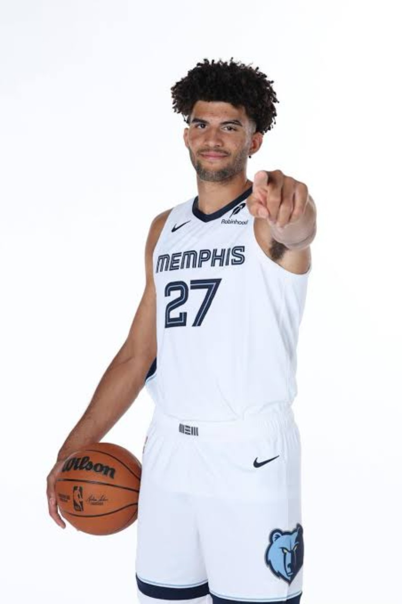
Cam Boozer's 29 points powered the 136–120 win at Washington. Memphis' offense is proving that a rookie's passing and scoring instincts can accelerate a young group, but transition defense and consistency against elite opponents remain tests.
Memphis is playing with a confidence that makes the rookie story more than a novelty. Boozer can connect actions through his passing and punish a defense that ignores his scoring, but the Grizzlies still need to show that they can control the glass and close defensive possessions against bigger opponents. A 40-win trajectory would be a genuine success; becoming a contender requires proving the same discipline against the West's best.
Jerome's scoring has given Memphis a new organizing force, while Boozer can punish mismatches without stopping the ball. Edey has to control the glass and protect the paint when opponents test the Grizzlies' size in space. The key is making the rookie's versatility and the veteran guard's creation work together late in close games.

The 106–98 loss at Minnesota illustrates why Portland's promising start still needs late-game offensive counters. Deni's creation, Dame's experience and Clingan's interior presence can give this team multiple identities if they mesh.
Portland has an intriguing balance of experience, size and creators. Deni's downhill passing can generate paint touches, while Clingan changes the geometry of the interior and Dame's shot-making offers a late-clock release valve. The danger is that these pieces can drift into separate offensive modes. The next test is whether the Blazers can consistently turn a stop into a clean transition opportunity and execute late against physical opponents.
Avdija's ability to push after rebounds and Lillard's range give Portland two very different ways to initiate offense. Clingan's screening and rim protection are essential when the pace slows. The Blazers can keep surprising teams if they defend without overhelping and resist settling for contested jumpers in the final minutes.

Detroit's 8–4 start deserves credit, but its recent uneven stretch asks whether Cade's creation can remain efficient when defenses crowd his lanes. The Pistons need defensive possessions finished with rebounds, not merely initial stops.
Cade gives Detroit a reliable organizer who can change speeds, get to his spots and find teammates when help arrives. The Pistons' contender argument, however, depends on the possessions he does not control: bench offense, transition defense and securing rebounds after forcing a miss. Detroit's early record deserves respect, but we want evidence that the defense can sustain its edge against multiple elite creators.
Cade has to balance his own scoring with early decisions that get teammates attacking a tilted defense. Ausar can turn stops into transition offense, and Reed's interior activity gives Detroit another physical edge. To rebound in the rankings, the Pistons need cleaner half-court possessions when opponents take away the open floor.

Shai's 37 against Sacramento ended a three-game skid. Oklahoma City's injuries have pushed too much creation onto one player; the next phase depends on complementary ball-handling and defensive continuity.
Shai is carrying a creation load that would challenge any guard. His ability to score efficiently against set defenses keeps Oklahoma City dangerous, but the injuries have narrowed the team's margin for error. The Thunder need secondary ball-handling to relieve pressure, timely cuts when the ball is trapped and consistent defensive rotations from unfamiliar lineups. We will judge the team with its availability context in mind without excusing every loss.
Shai remains the late-clock solution, but Oklahoma City's ceiling depends on how consistently the supporting guards keep the ball moving when defenses load up on him. Holmgren and Hartenstein have to own the glass and erase mistakes behind pressure at the point of attack. That balance will determine whether this surge holds.

Five straight wins, capped by a 128–110 victory over Houston, put Miami back into the conversation. Giannis and Bam can overwhelm the paint, but the larger story is whether the guard play and spacing make their partnership scalable against contenders.
The Giannis–Bam combination is built to control the paint at both ends. Giannis forces help at the rim while Bam can screen, pass and defend across positions; the question is how the Heat organize spacing around them. Davion Mitchell's ability to make early decisions is crucial because slow entries invite opponents to crowd the lane. Miami's winning streak is encouraging, but its championship case requires a dependable late-game half-court answer.
Giannis and Bam can make the paint feel closed to opponents, but Miami needs a clear offensive plan when defenders pack that same area at the other end. Cutting, quick reversals and timely perimeter shooting are essential. The Heat's rise depends on converting elite frontcourt talent into cleaner possessions and fewer defensive breakdowns.

Phoenix's 117–105 win in Denver underlined the Nuggets' inconsistency. Jokić can stabilize an offense, yet Denver needs more dependable perimeter defense and secondary scoring before it belongs above the surging teams.
Jokić can manufacture efficient offense from almost any alignment, but even his vision cannot erase every defensive breakdown. Denver must improve how its guards contain the first dribble and how the weak side rotates after the initial help. Murray's scoring and decision-making have to give the Nuggets a second dependable pressure point, especially when opponents try to turn every possession into a physical fight.
Jokić can solve almost any coverage, but Denver needs Murray's downhill threat to keep defenders from sitting on passing lanes. The supporting wings have to cut decisively and make open shots rather than watch the two stars operate. A more consistent defensive effort is what separates a dangerous Nuggets team from a true top-tier one.
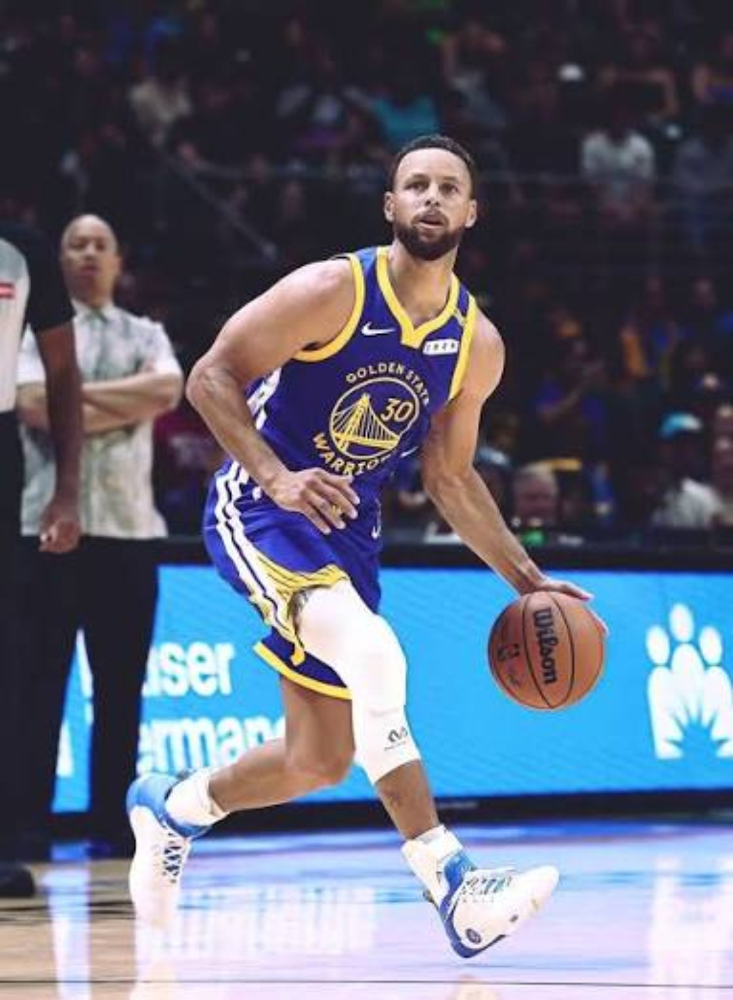
Golden State's 115–94 loss at New Orleans was its third straight despite Yaxel's 28 points. Without Steph, the Warriors must create cleaner early offense and avoid putting an unrealistic scoring burden on their rookie.
Without Curry's off-ball gravity, Golden State's actions become easier to anticipate. Yaxel can help as a rebounder, cutter and versatile defender, but asking him to replace the offensive attention Steph draws is unfair. The Warriors need to win the turnover battle, get paint touches before swinging to the perimeter and create simpler reads for their young players. Their ranking reflects both talent and the immediate cost of missing their central organizer.
Curry's off-ball movement still creates the first crack in the defense; Lendeborg's value is making something happen after that first rotation. Golden State needs Podziemski and the rest of the guards to defend the point of attack and keep turnovers low. The Warriors' ceiling rises when their rookie impact is more than a scoring headline.

Donovan Mitchell's 39 in a 126–115 win over Chicago shows Cleveland's scoring punch. Defensive consistency and support around its lead creator are what separate a dangerous playoff opponent from a true East contender.
Mitchell can produce a huge scoring night without Cleveland necessarily solving its bigger problems. The Cavaliers need more connected defense behind the initial point of attack and more reliable offensive movement when an opponent forces the ball from his hands. Their best version is balanced: multiple threats, clean defensive rebounding and enough pace to avoid relying on contested jumpers late.
Mitchell and Harden can generate a quality shot against a set defense, but Cleveland has to make sure their possessions do not become alternating isolations. Mobley's mobility should anchor a more disruptive defensive identity. The Cavaliers can rise quickly if the guards create for each other and the team wins the rebounding battle.
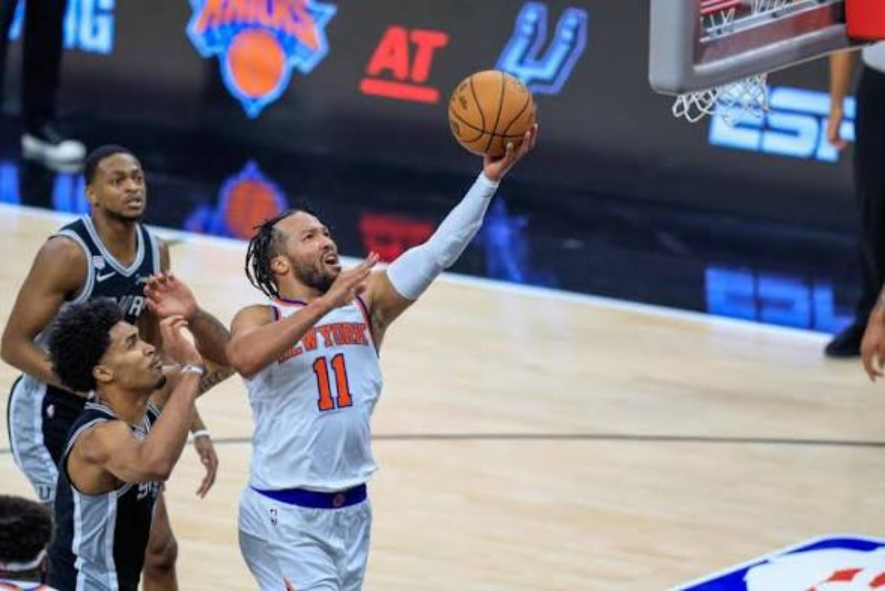
New York has enough physicality to make games ugly and win anyway. Its ceiling depends on getting consistent perimeter creation without sacrificing the defense and rebounding that have defined its best stretches.
New York's toughness is meaningful only when it produces repeatable advantages. The Knicks can control the glass and make opponents work, but stagnant offense allows defenses to load up on their primary creators. The challenge is finding more cuts, quick reversals and decisive drives while maintaining the physical identity that gives them a chance in a seven-game series.
Brunson and Towns give New York a dangerous two-man foundation, but the Knicks' identity cannot depend on trading difficult jumpers. Hart's rebounding and Anunoby's versatility must turn defense into extra possessions. The path upward is controlling the physical parts of games while preserving enough spacing for Brunson late.

Atlanta's 113–106 win in Milwaukee keeps its positive momentum alive. The Hawks need to turn playmaking and wing activity into reliable defensive rotations, especially when opponents force them to execute late.
Atlanta has playmaking and offensive energy, but the Hawks' defensive ceiling will determine whether the early promise lasts. Kingston Flemings' efficiency and decision-making add another dimension to the guard rotation. The test is what happens when the first action is taken away and when opponents hunt mismatches on the other end. Winning the non-star minutes is the next step.
Johnson's transition play and connective passing are the foundation; Alexander-Walker's defense can create the turnovers that fuel it. McCollum supplies a half-court release valve when opponents take away the open floor. Atlanta needs to improve the quality of its defensive possessions, not just the speed of its offense.
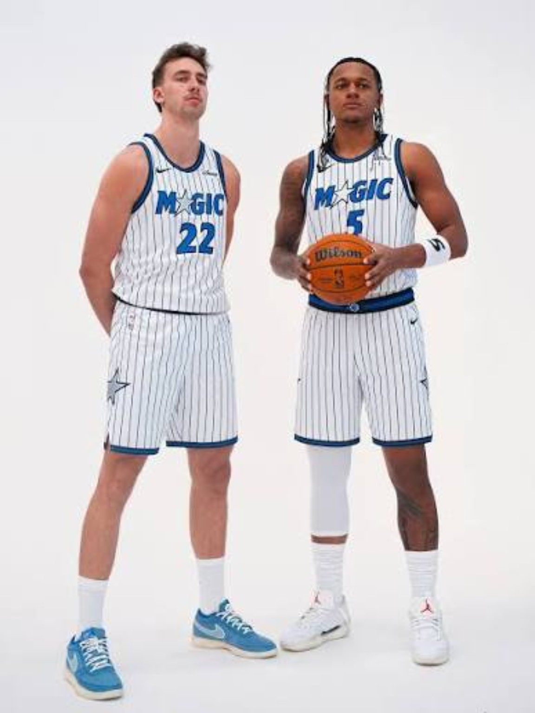
Orlando's 115–105 win at Boston is a statement result. Franz's point-forward versatility can break conventional matchups; the question is whether the Magic can replicate that shot creation and floor balance against different defenses.
Franz's size and passing allow Orlando to create mismatches without a traditional point guard running every action. The Boston win shows what that versatility can look like when the Magic move the ball and defend with discipline. Orlando still needs reliable shooting around its initiators and better late-clock organization when opponents stay home on cutters.
Wagner's versatility and Bane's shooting should give Orlando more ways to stretch a defense, but the Magic must create advantages before the shot clock becomes an emergency. Banchero's availability changes the ceiling, not the need for better spacing and ball security. Their defense has to generate enough stops to stabilize the offense.
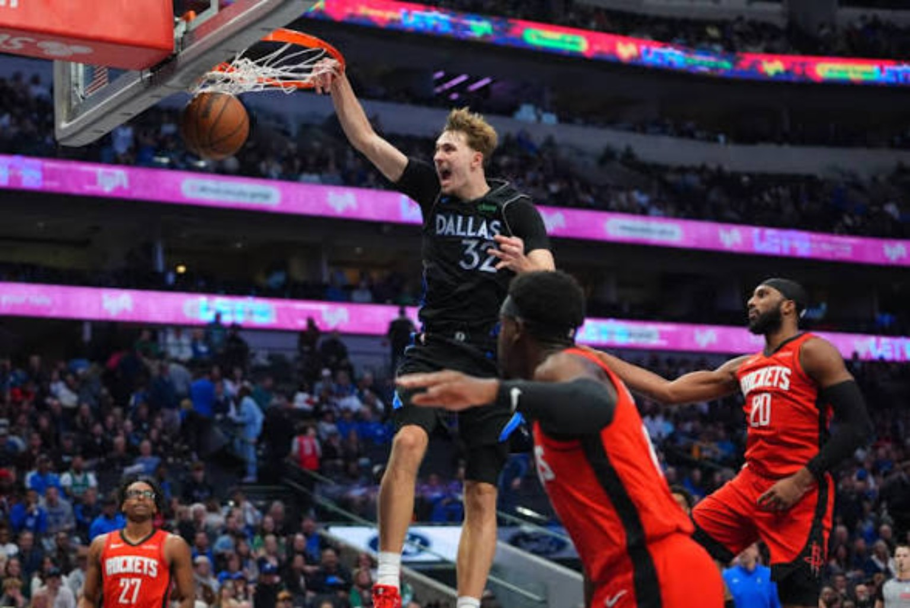
Dallas' 7–7 record reflects an unsettled team with genuine individual talent. The challenge is turning flashes from its creators into repeatable half-court possessions and reducing the defensive breakdowns that erase good stretches.
Dallas has enough individual skill to win possessions in isolation, but the team needs a clearer hierarchy of actions. The Mavericks must balance development with the demands of winning now, particularly in how they space the floor and protect the paint behind aggressive perimeter defenders. Their record is not a verdict on the talent; it is evidence that the pieces have not consistently fit together.
Flagg's breakout scoring is only one part of his impact: his size, help defense and ability to attack a rotating defense can lift everyone around him. Irving must provide a steady late-game counter, and Gafford has to finish the possessions Dallas forces opponents to miss. The Mavericks' next step is making that balance repeatable.

The 117–105 road win in Denver is a needed step for Phoenix. Its challenge is to establish the same physicality and shot discipline over several games instead of treating one impressive result as proof of a turnaround.
The Denver win showed Phoenix can win with physicality and shot discipline rather than pure shot-making. The next step is consistency: transition coverage after misses, cleaner weak-side rotations and possessions where the ball finds the open player before the defense recovers. One impressive road performance is an opening argument, not a complete turnaround.
Booker can control tempo and Green can create bursts of speed, but Phoenix needs more possessions where those skills complement rather than alternate. Brooks must set a defensive tone without giving away fouls. Until the Suns rebound consistently and communicate on rotations, their individual shot-making will not be enough to change the ranking.
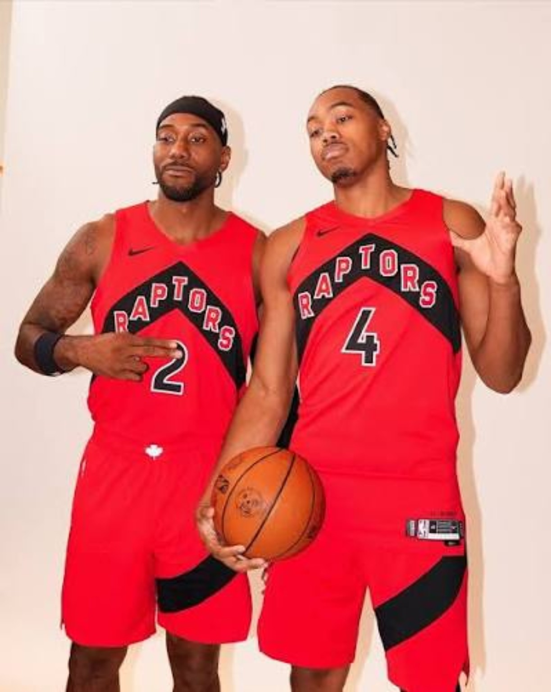
Toronto's 5–8 start leaves little room for empty possessions. Its best pathway is connected defense, transition opportunities and purposeful ball movement rather than asking one scorer to solve every set.
Toronto needs to manufacture advantages through effort and connectivity rather than rely on a single star bailout. That means aggressive but disciplined closeouts, rebounds that trigger transition and quick passing against a loaded defense. The Raptors' ceiling will rise when they stop giving away possessions through avoidable turnovers and defensive lapses.
Barnes gives Toronto the ability to switch, pass and attack from multiple spots, while Quickley can push tempo before a defense gets organized. Barrett must turn those advantages into efficient drives. With Kawhi's availability an ongoing factor, the Raptors need a dependable identity that survives changes to the starting five.
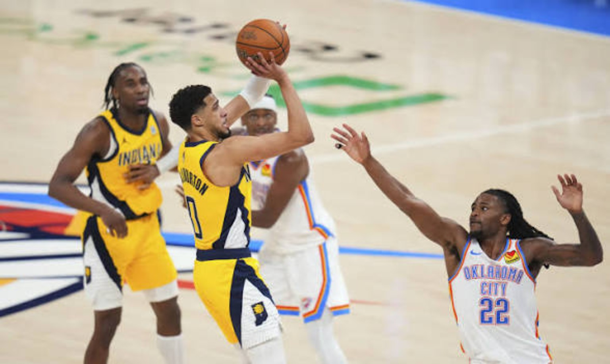
Indiana's 5–9 record does not erase the value of its roster, but availability and continuity have limited its ceiling. The Pacers need to protect the ball, rebound more forcefully and keep a realistic path toward the playoff chase.
Indiana's roster still has useful skill, but injuries have made its offense harder to organize. The Pacers need to get healthy and build a reliable rhythm between the guards and the interior finishers. Zubac offers size and rebounding, though his value differs from a floor-spacing, switchable big. The route back into the playoff conversation starts with defensive rebounding and fewer wasted possessions.
Haliburton's passing is most dangerous when teammates run hard and cut before defenders can recover. Siakam offers the half-court answer when transition chances disappear. Indiana needs better defensive resistance at the point of attack and stronger rebounding to give its offense enough possessions to matter.

The Clippers' 4–8 record reflects an uphill start even after their win over Charlotte. They need healthy rotation continuity and better point-of-attack defense before projecting a sustained run.
The Clippers need an identity that does not disappear when a veteran sits or a matchup turns against them. Better point-of-attack resistance would reduce the strain on the back line, while more deliberate ball movement would create shots that do not depend on individual difficulty. A short winning spell is not enough; they need a repeatable formula.
Garland can organize the offense and force help with his dribble, but the Clippers need more reliable finishing and floor balance around him. Sanders and Wagler should be judged on decision-making and defensive discipline as much as flashes of scoring. Their next step is reducing the empty possessions that make close games slip away.

Jeremiah Fears' 19-point, 10-rebound, 10-assist triple-double led a 115–94 win over Golden State. New Orleans still has a 5–10 record, so the challenge is turning young-player breakthroughs into repeatable winning habits.
Fears' triple-double offers a real development marker, but New Orleans cannot build a season around isolated highlights. The Pelicans need to reduce defensive breakdowns after turnovers, secure the glass and generate enough quality looks to stay competitive when their young creators go cold. Development and winning habits should reinforce each other.
Zion's paint pressure is the Pelicans' clearest advantage, but opponents will keep sending bodies unless the perimeter spacing punishes it. Fears and Queen need purposeful roles rather than scattered touches. New Orleans can climb if it protects the defensive glass and turns Zion's gravity into repeatable team offense.
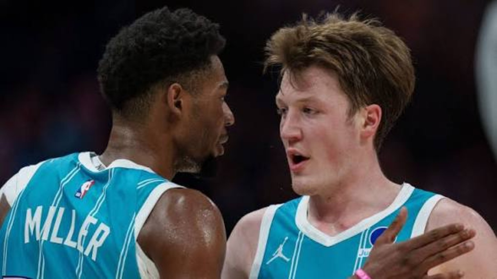
Charlotte's 4–9 start leaves a narrow margin for mistakes. A cleaner half-court offense and stronger defensive rebounding would help the Hornets keep competitive games from slipping away.
Charlotte has to convert individual flashes into connected possessions. The Hornets' guards need better screen navigation and the wings must finish defensive possessions with rebounds. Offensively, more decisive paint attacks and off-ball movement would ease the pressure on difficult jump shots. The evaluation is about habits that can survive a full season.
Miller's shot creation is the centerpiece, while White can give Charlotte another way to pressure the defense off the dribble. Diabaté's energy on the glass has to become a consistent possession advantage. The Hornets need to stop giving away runs through poor transition defense if they want their young talent to translate into wins.
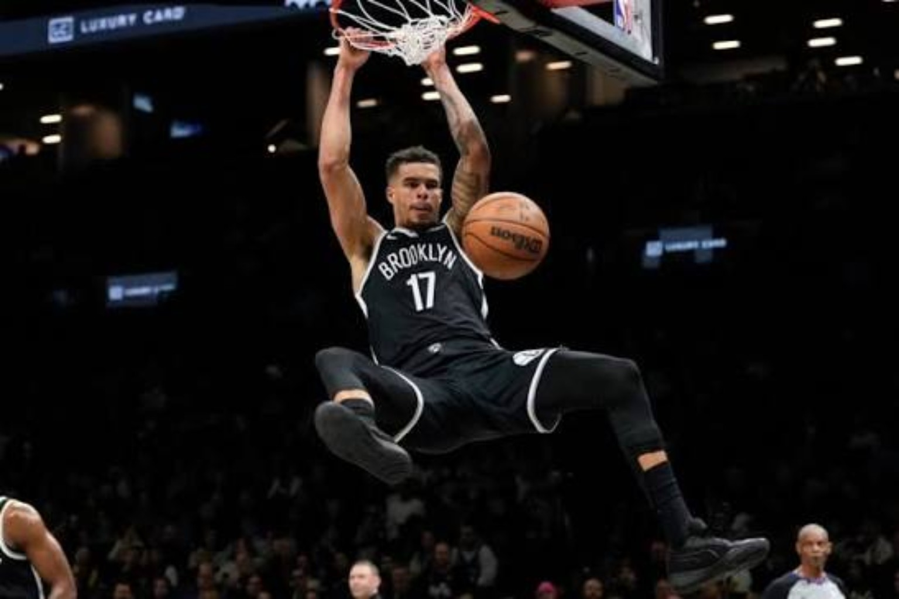
Brooklyn fell 135–123 to Philadelphia and sits 3–10. Development matters, but the Nets also need to build dependable defensive principles and limit the stretches when one opposing run decides a game.
Brooklyn is in a development phase, but the standard still has to be competitive execution. The Nets need their young players to recognize when to push and when to run a half-court set, and they cannot surrender easy transition chances after a miss. Progress should show up in fewer defensive mistakes and more purposeful possessions, not merely improved individual scoring totals.
Randle's interior creation and Porter Jr.'s shooting give Brooklyn two credible scoring options. The challenge is using them to create opportunities for Brown and the young guards without compromising defensive effort. The Nets need fewer isolated possessions and a more reliable plan for guarding the ball before the next ranking.

Washington's 136–120 loss to Memphis extended its skid. The Wizards need their young players to learn the difference between producing highlights and executing sound possessions at both ends.
Washington's losses reveal the cost of playing without consistent defensive structure. Young players need freedom to learn, but that freedom has to come with clear responsibilities on rotations, box-outs and transition coverage. The Wizards should measure progress by reducing the stretches where one opponent run decides the night.
Young can manufacture offense and Davis can erase mistakes at the rim, but Washington needs a reliable bridge between those strengths. Dybantsa's development should be supported by defined touches and clear defensive assignments. The Wizards' biggest opportunity is reducing the easy baskets they concede after turnovers and missed rotations.
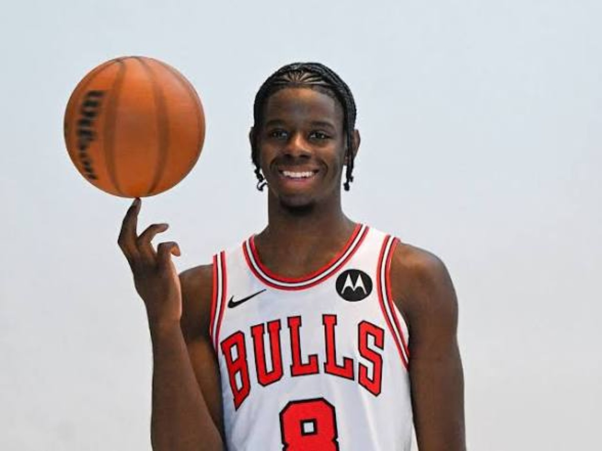
Chicago allowed 126 in a loss to Cleveland. Caleb Wilson's development matters, but the team cannot build a foundation without stronger help defense, transition organization and better containment of elite guards.
Chicago's young talent needs a structure that rewards the right decisions. Wilson's growth is important, but the Bulls must also defend the first action, communicate through screens and get the ball moving before opponents can set their help. The next step is establishing a team identity rather than relying on one prospect's highlights.
Wilson's emergence is a bright spot, but Chicago must build a structure around him rather than ask the rookie to rescue every possession. Giddey's passing can create early offense and Buzelis can attack open space. The Bulls' immediate priority is defending the paint and ending possessions with rebounds.
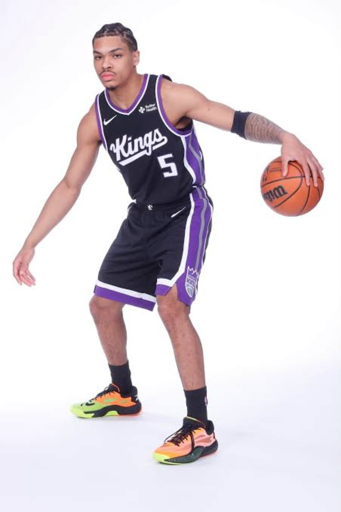
At 1–12, Sacramento is asking Darius Acuff Jr. to create in a difficult environment. The team needs better shot selection, improved spacing and a defensive structure that does not expose its young guard every night.
Acuff's shot creation is an important developmental asset, but Sacramento's environment makes every offensive possession difficult. Better spacing and quicker decisions could keep him from attacking crowded lanes all night. The Kings also need a defensive plan that supports their guards rather than leaving them to contain every mismatch alone.
Acuff's scoring upside gives Sacramento something to build around, but Sabonis has to remain a central facilitator rather than an afterthought. LaVine and Monk can attack the gaps his passing creates. The Kings need better perimeter containment and more disciplined shot selection to turn promising individual nights into victories.

Utah's 1–13 record shows how far the defensive foundation has to travel. Young talent can learn through losses, but there must be measurable improvement in rotations, transition effort and late-clock decision-making.
Utah's young group needs tangible improvement in habits even while the losses pile up. The Jazz have to compete in transition, communicate on the back line and execute late-clock offense without rushing into the first contested look. Their season should be evaluated through consistent progress, not a single upset.
Markkanen's shooting can pull big defenders away from the rim, and George must use that space to create better looks for others. Peterson's development needs patient, defined opportunities. Utah cannot outscore its defensive mistakes every night; communication and transition coverage are the foundation of any climb.

Milwaukee's 1–13 start and prolonged skid demand more than cosmetic fixes. Brayden Burries can develop through meaningful minutes, but the Bucks need clearer roles and more consistent defensive resistance.
Milwaukee's early collapse is too significant to explain away with a single missing piece. The Bucks need clear defensive assignments, stronger rebounding and a more coherent offensive hierarchy. Burries' minutes can be valuable for his development, but his growth needs to occur within a team that establishes accountability on both ends.
Herro can make difficult shots and Ware offers a developing interior target, but Milwaukee needs an offensive identity that produces easier attempts for both. Burries' minutes should emphasize defense, spacing and smart reads. At 1–9, the Bucks must first become competitive possession by possession before discussing a rankings climb.

Luka's offense sets the table for a 12–2 Lakers team. His case rests on the breadth of pressure he applies: scoring against switches, finding cutters against help and dictating late-game possessions. To stay first, the defense must remain competitive around him.
The separation in his case is not only how often he scores but how he determines the kind of shot the Lakers get. When a defense blitzes, the pass to the short roll must arrive on time; when it switches, Luka must identify the mismatch before the help loads. The 4DK question is whether he can sustain that orchestration while keeping the defense from targeting him possession after possession.

Wembanyama is the strongest two-way counterargument to Luka. San Antonio's 12–2 record is tied to how much space he takes away at the rim, while his offensive skill makes opponents pay for sending extra size. His path to first is sustained dominance on both ends.
A block total cannot fully measure his value. Opponents change drives before they even reach him, and that allows the Spurs to be more aggressive on the perimeter. Offensively, he can punish a smaller defender or pull a rim protector away from the basket. To overtake Luka, he must maintain that influence when opponents slow the pace and force him to make reads from crowded spaces.

Shai's 37 against Sacramento ended Oklahoma City's three-game skid. With injuries stressing the roster, his MVP case includes the difficulty of the assignment, but he must keep teammates involved rather than simply absorb every possession.
His footwork and pacing create high-quality looks without needing explosive first steps on every trip. The injuries around him make the task harder, but MVP evaluation still asks whether the offense can function through others. His path upward is sustaining elite efficiency while turning defensive attention into easier possessions for teammates.

Tatum remains fourth because Boston's structure benefits from his scoring and creation. The loss to Orlando is a reminder that the MVP race is about adjusting when a defense changes the terms, not just piling up numbers in wins.
Tatum's argument is built on size, versatility and his ability to serve as both a scorer and a connector. The test is whether he can consistently solve aggressive switches and traps without the offense slowing to a standstill. Boston's top-three position strengthens his case, but the team's collective success cannot substitute for an individual assessment.

Giannis' partnership with Bam is becoming the center of Miami's resurgence. Five straight wins, including Houston, suggest that their physicality can travel. The remaining question is whether the spacing and late-game offense hold against elite defenses.
Miami's pairing with Bam creates unusual defensive flexibility and relentless pressure on the rim. The spacing question is real: when both operate near the paint, guards must shoot or cut with purpose. Giannis' MVP case rises if his transition force translates into controlled half-court execution against opponents that build a wall.

Şengün's passing from the middle of the floor gives Houston an offensive identity that cannot be replicated by ordinary post play. Miami's win over the Rockets exposed the need for faster counters when defenses load up around him.
His offensive value is rooted in anticipation. A cutter moving behind a defense can be just as dangerous as his post scoring because Şengün sees the opening early. Houston's challenge is to keep the floor spaced and avoid becoming predictable when teams take away his first passing window. Stronger defense and a top-tier team record would move him closer to the leaders.

Cade's control and creation have helped Detroit become a legitimate early East factor. His next leap is to make every defensive coverage expensive while keeping turnovers and late-game stagnation under control.
Cade's tempo is a weapon: he can pause a defender, turn the corner and make a pass that arrives before the help recovers. The next level is producing those advantages with fewer turnovers and helping Detroit maintain offense during difficult stretches. His MVP candidacy is tied to whether the Pistons become a consistent contender.

Jokić remains the league's most inventive offensive hub, even as Denver sits 7–5. The loss to Phoenix reinforces why individual excellence and team performance must both matter in an MVP ballot.
Few players can create offense from as many places on the floor. His passing makes even an ordinary cut a dangerous action, and his touch gives Denver an answer when a possession breaks down. But a 7–5 team start leaves a tougher MVP path; he needs the supporting defense and secondary scoring to stabilize.

Maxey brings speed and pressure to a Philadelphia team sitting 12–3. His case grows when he balances personal scoring bursts with getting Embiid and the other creators involved without surrendering pace.
Maxey's speed forces a defense to retreat, and that pressure opens the floor for Philadelphia's bigger scorers. To rise, he must show more than scoring bursts: strong decisions after a trap, disciplined point-of-attack defense and the ability to control a close game when the first option is unavailable.

Curry's movement and shooting still bend the defense even when his box score does not tell the whole story. Golden State's three-game skid without him is evidence of his importance, but availability is part of the MVP equation.
Curry's movement bends defenses before he catches the ball. Golden State's struggles without him underline how much of its system depends on that gravity. Still, an MVP case cannot rest only on hypothetical impact; availability and sustained production must be weighed alongside his unique value.

The case for No. 1 is all-around offensive influence, not simply scoring. His 29 against Washington is a signature moment; his passing, rebounding and feel make Memphis harder to defend even when the play is not called for him.
What separates Boozer is the way he connects possessions. He can score, but he also reads the next pass and positions himself to keep the offense moving. Memphis' winning start strengthens his case. The next challenge is handling more physical defenders and maintaining defensive focus when opponents attack him repeatedly.

Yaxel scored 28 against New Orleans in a lopsided loss. The individual production is real, but Golden State's struggles show the limits of expecting a rookie to replace Curry's entire offensive ecosystem.
Yaxel's role is difficult because he is being asked to contribute on both ends while the Warriors lack their primary offensive organizer. His rebounding, cutting and versatility remain strengths. The evaluation must separate his own decisions from the quality of chances the team creates for him; he needs a more dependable jumper but should not be judged on a single cold night.

Acuff's difficult assignment is to manufacture offense for a Sacramento team that rarely plays from ahead. We value the shot creation while demanding more efficient decisions and stronger defensive engagement.
Acuff has the difficult task of creating advantages for a struggling Sacramento team. His handle and willingness to attack matter, but the next leap is recognizing when the defense has already won the possession and making the simple pass. His growth should show up in better shot selection, fewer turnovers and defensive effort.

Peterson remains fourth on our editorial ballot because of his ability to create a shot and pressure the defense. His next step is sustained efficiency, availability and proof that his offense improves the whole group.
Peterson's creation talent gives him a high ceiling, but ranking fourth means we expect substance beyond flashes. He needs to show that he can make quick reads against help, contribute when the shot is not falling and remain available enough to build a consistent body of work.

Dybantsa's physical tools and scoring potential are exciting, but his top-five position must be supported by consistent minutes and two-way commitment. The next audit will focus on role and availability.
The athletic tools and scoring upside make Dybantsa a compelling prospect. The question is how often those gifts translate into efficient decisions against NBA size. He must develop as a team defender, cut without the ball and create for others when the defense closes his preferred lane.

Wilson is learning to produce within Chicago's unstable team structure. His development should be judged by defensive reads, rebounding and the quality of his attempts as well as raw scoring.
Wilson has opportunities to learn through mistakes in Chicago, but development should not mean accepting every mistake as inevitable. He needs stronger defensive positioning, more decisive finishes and better rebounding discipline. The ranking recognizes his upside while demanding progress in the details.

Thomas has the offensive skill to change a game in bursts. To climb, he needs repeatable impact: efficient possessions, active off-ball defense and useful decisions when opponents deny his first move.
Thomas can generate offense in bursts, which is valuable for a team with scoring needs. To become a top-five rookie candidate, he has to prove that his shot creation does not stall the rest of the offense and that he can defend consistently when he is not the focal point.

Mara's size gives him a pathway to impact as a screener, finisher and paint presence. We need to watch foul discipline, defensive mobility and whether his contributions hold against smaller lineups.
Mara's size can alter shots and create screening angles that do not show up in points per game. His ceiling depends on staying mobile enough to survive perimeter actions, avoiding fouls and finishing through contact. The role matters as much as the box score.
Wagler stays in the ten because he can contribute as a developing creator for the Clippers. The next step is creating advantages independently and sustaining energy on both ends, not only capitalizing on teammates' gravity.
Wagler has a useful path as a connector in the Clippers' offense. He needs to hit open shots, move quickly into the next action and compete on defense. To climb, he must show he can generate an advantage rather than only benefit from one.

Burries claims No. 10 for scoring and rebounding promise. His outside shot remains a concern, and Kingston Flemings' playmaking plus Trevon Brazile's finishing keep the competition for this position intense.
Burries wins the final spot because his scoring and rebounding provide tangible contributions, but the competition is close. His shooting efficiency and defensive consistency must improve. Flemings' decision-making and Brazile's complementary impact make this a weekly contest, not a permanent award.
NOVEMBER 10 EDITION → · NOVEMBER 3 EDITION → · OCTOBER 27 EDITION →
Team scoring and points allowed, MVP and Rookie Watch season averages, and the labeled last-five results above are through games of November 16, 2026. MVP figures: HoopMetrics and Basketball-Reference; rookie figures: RookieRanks, compiled from final game box scores. Last-five form is shown for all 30 teams using the November 16 standings snapshot; individual injury designations remain pending confirmation. Previous editions remain dated historical records.